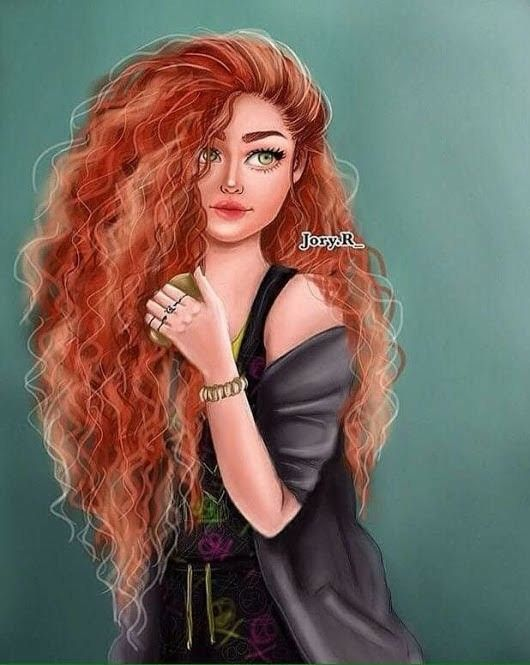

"Quando pensei na história para escrever, eu pensei em fazer algo totalmente autoral, mas isso, ifnfelizmente, nao foi possível. Tive que pegar o contexto de uma série de quadrinhos adaptada para uma série da qual eu sou fã, e no final acabou dando certo. Me orgulho da história que escrevi, fui pensando e me baseando, em partes, na série original". Diz o autor dessa obra, cuja o pseudônimo é Sr.Sentido.
Para não ficar de fora dessa incrivel história, acesse o Wattpad e pesquise pelo nome Não Me Culpe e aproveite cada momento que essa história vai te proporcionar.
Essa história, como todas as outras desse autor, contém drama, romance LGBT+, morte e muito problema familiar. Para começar, o nosso mocinho, Eddie Munson, se mete em uma furada depois de ter vendido drogras para uma garota, contando com ser acusado de assassinato, quase ser morto muitas vezes por seres sobrenaturais e por último, mas não menos importante, ser levado sem querer para outra dimensão. Como em toda história existe um mocinho e um vilão, como essa não é diferente deixe-me explicar quem é quem...
Gosta de ouvir rock e compor músicas. Protege as pessoas que considera amigo. Parece um cão raivoso, mas é um gatinho procurando carinho. Uma palavra para definir: Desconfiado
Gosta de ajudar as pessoas. A pessoa com quem mais se importa é seu irmão adotivo, Dustin. Parece uma pessoa inofensiva, mas seu outro lado diz outra coisa. Uma palavra para definir: Dividida
Gosta de fazer coisas a mão. Tem poucas pessoas na sua vida, mas que está presente é muito especial. Pode te matar, mas não gosta de violência. Uma palavra para definir: Influenciável.